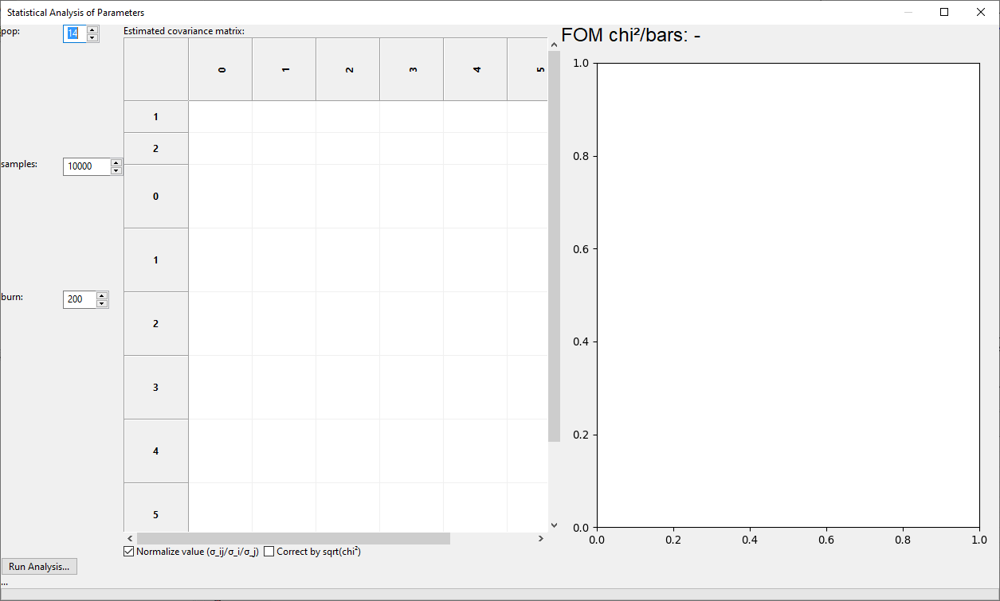
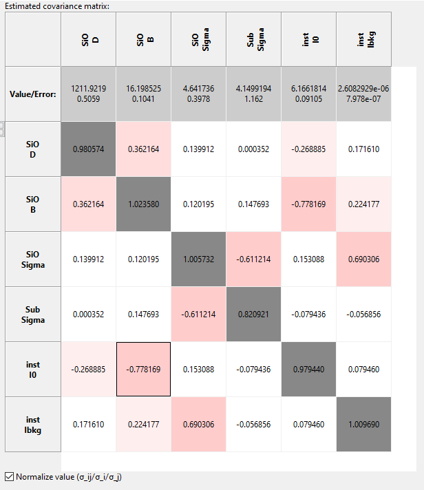

Error Statistics from bumps library¶
Performing Statistical Uncertainty Calculation¶
GenX includes an interface to the bumps library for data fitting and uncertainty estimation. The library can be used as optimizer alternative to the Differential Evolution but also to analyze the parameter statistics after a successful fit with the standard DE method.
While a description of how the library works is out of the scope of this documentation (see link above), this page will describe the basic usage of the parameter uncertainty estimation procedure and its parameters.
After finishing the refinement of you model to a valid chi2bars FOM, click the Error Statistics button:

This will open the Statistical Analysis of Parameters dialog that will initially be empty:
There are there parameters that need to be set before running the analysis:
- pop
The relative size of a population used for the Marcov-Chain Monte-Carlo method. This is multiplied with the number of free parameters in the fit to set the number of parameter sets calculated for each iteration of the algorithm. Good values are between 8 and 20.
- samples
The number of parameter samples to be drawn randomly to buildub the parameter statistics. The initial value of 10000 is a low value good enough to get a rough estimation of uncertainties and an idea about the cross-correlations, in general. For publication quality results this needs to likely be increased.
- burn
The number of iterations to run the algorithm before collecting the samples statistics. For a pre-fitted model 200 seems a good value. If you see artifacts in the plot like far outliers that seem strange, try to run again with a higher burn value.
After choosing these parameters, press the Run Analysis button to perform the calculations. For complex models with good statistics this can take several minutes.
After the run has finished the left side of the dialog will be populated with a normalized covariance matrix as well as the fitted parameter values and uncertainties on the left. Colors indicate the amound of cross-correlation between two parameters. For well behaved models the diagonal elements of the normalized matrix should approach 1 for good statistics, indicating that the covariance indices correspond to the estimated parameter uncertainty. In some cases, like roughness parameters that tend to zero, this rule of thumb can be violated as in the case of the Sub.Sigma parameter in the example below.
{kind=link}
The right side panel will show a graph of the parameter distribution for two parameters with a color indicating parameter probability, which is the basis for the covariance matrix estimation, in logarithmic scale. Initially the parameter pair with the largest absolute cross-correlation is shown, but the graph can be changed to any pair of different parameters by double clicking on the matrix entry.

After the evaluation you can copy-paste the table into e.g. Excel and the error values are stored in the GenX paramter table for export. If you export to the new ORSO .ort format the full error estimation, including covariance matrix, will be written to the file header information.
Note
Statistical evaluation of parameter uncertainties relies on Chi² being correctly defined. This means that the error values of the dataset have to be correct. Depending on the experiment this may be non-trivial but it is common practice and often a good assumption to use the square root of the actual counts and propagate these errors when e.g. scaling the data.
If the errors are only known to a common factor (e.g. sqrt(I) where I has an unkown normalization) an established approach is to scale the resulting parameter uncertainties by sqrt(Chi²) to correct for this common factor. There is a check-box in the GenX dialog to apply this correction. It is up to the user to decide if this correction is to be used. (Deviations from the model at e.g. the total reflection region may increase the Chi² arbitrarily, leading to significant overestimation of the parameter uncertainties.)
Including Systematic Errors in XRR/NR Modls¶
Will be discussed in new GenX publication and added here once I find the time do write it. A common feature of such treatment is the advantage of making Chi² a valid FOM again and allowing statistically correct treatment of parameter uncertainties.